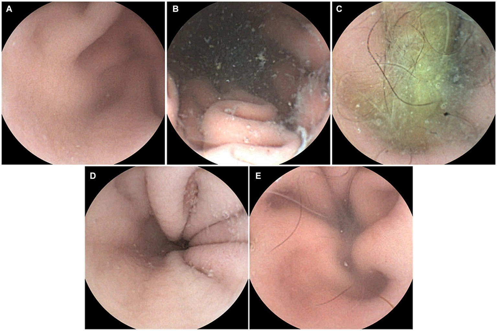

Capsuloendoscopia gástrica canina
Figura 4 completa: cinco perros del grupo sin administración de cuerpos extraños. Se obtuvo con una cápsula, no con el endoscopio flexible del simulador.
Kim U-Y, Kim YJ, Lee JW, Kim M, Jang H y Jung D-I (2024). Frontiers in Veterinary Science, 11:1440831.Artículo y figura originales
Licencia CC BY 4.0